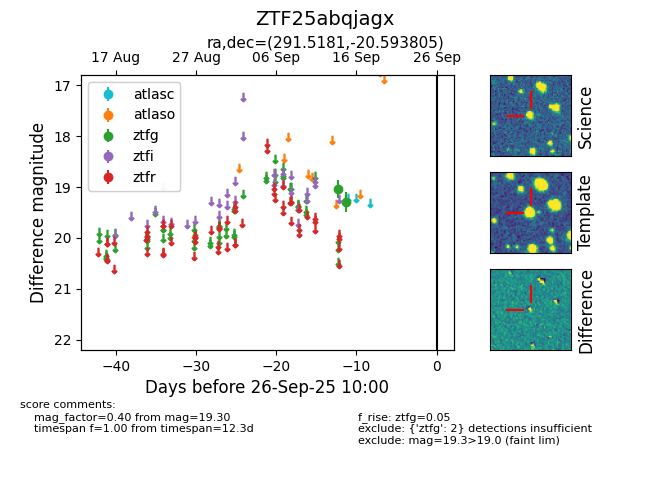

FINK: ZTF25abqjagx
Lasair: ZTF25abqjagx
ALeRCE: ZTF25abqjagx
ZTF25abqjagx (ztf,fink)
equatorial (ra, dec) = (291.5181,-20.59380)
galactic (l, b) = (17.8847,-16.60730)

last ztfg=19.30
2 ztfg detections